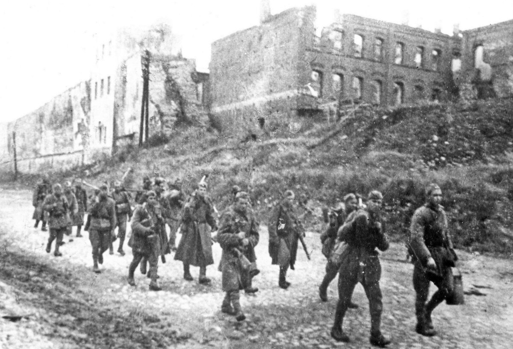
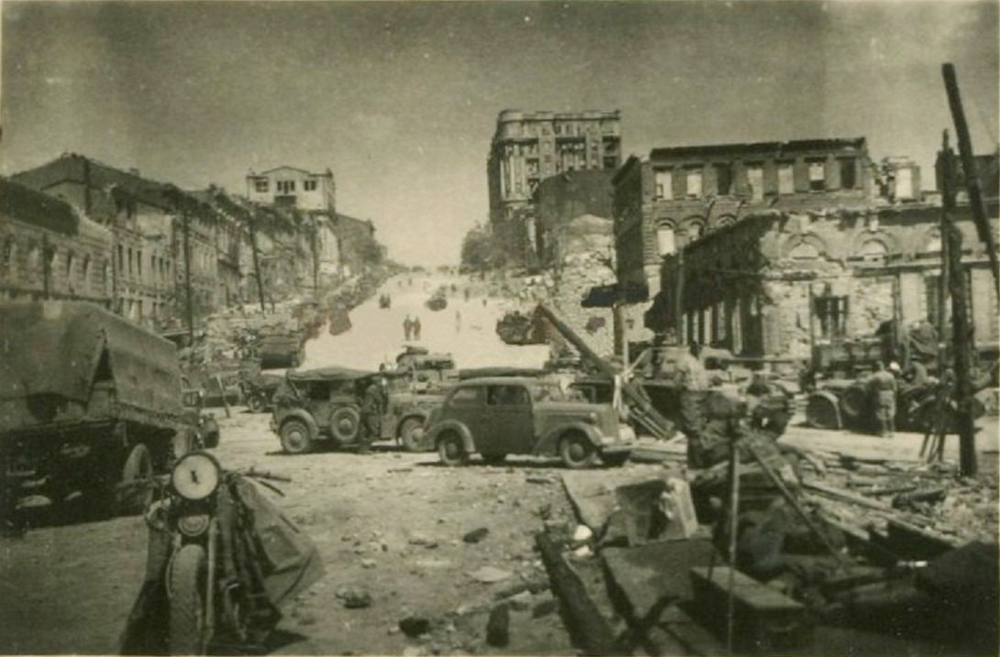
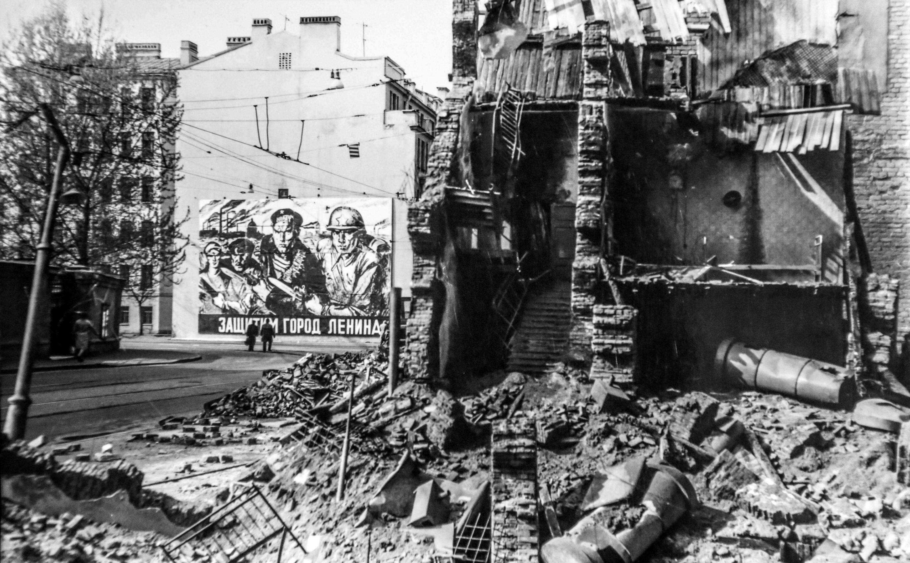

Междисциплинарный проект
Смоленская область стала одной из первых территорий, подвергшихся военным преступлениям нацистских войск. За время оккупации было уничтожено свыше 230 населённых пунктов вместе с жителями.

Ростовская область пережила две волны оккупации — в 1941 и 1942–1943 годах. Особой жестокостью отличались действия оккупантов в Ростов-на-Дону, где были уничтожены тысячи мирных жителей. Репрессии включали массовые расстрелы, депортации, облавы и создание временных лагерей. При отступлении немецкие войска разрушали инфраструктуру и хозяйство региона.

